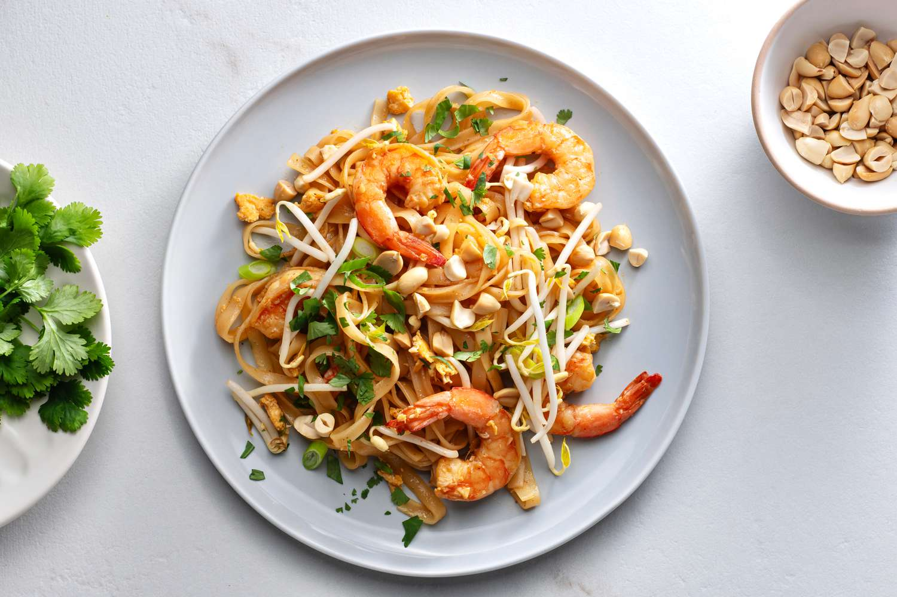

Pad Thai

Description
This Sukhothai pad thai can be made with shrimp, chicken, or pork instead of tofu.
Ingredients
- ½ cup white sugar
- ½ cup distilled white vinegar
- ¼ cup soy sauce
- 2 tablespoons tamarind pulp
- 1 (12 ounce) package dried rice noodles
- ½ cup vegetable oil
- 1 ½ teaspoons minced garlic
- 4 eggs
- 1 (12 ounce) package firm tofu, cut into 1/2 inch strips
Steps
- To prepare pad thai sauce: In a medium saucepan over medium heat, blend sugar, vinegar, soy sauce, and tamarind pulp.
- To make pad thai: Soak rice noodles in cold water until soft; drain. In a large skillet or wok over medium heat, warm oil and add garlic and eggs; scramble eggs. Add tofu and stir until well mixed; add noodles and stir until cooked.
- Stir in pad thai sauce, 1 1/2 tablespoons sugar, and 1 1/2 teaspoons salt. Stir in peanuts and ground radish. Remove from heat and add chives and paprika.
- Serve with lime and bean sprouts on the side.